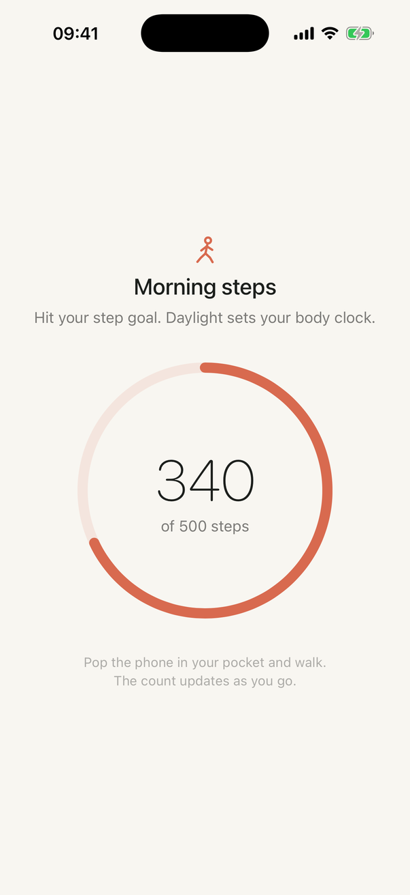

First Light › Alarm that makes you get out of bed
Putting the alarm across the room is the oldest trick there is, and it works for exactly as long as it takes to carry the phone back to bed. First Light asks for something the duvet cannot provide: steps.
The advice is right about one thing: the fix for snoozing is not more willpower, it is a different environment. Making yourself stand up to silence the alarm beats any amount of resolve, because it stops negotiating with the groggy version of you and simply requires a behaviour.
The advice fails at step two. Once you are standing by the dresser with a silent phone in your hand, nothing stops you walking it back to bed. The behaviour it required was "stand up", and standing up is reversible. What you need is a behaviour that, by the time it is done, has changed how awake you are.
Set a step goal the night before. When the alarm rings, First Light starts counting using the iPhone's pedometer, the same sensor the Health app reads, and the number climbs live on screen with every step. The alarm is not done until you hit the goal. Not "dismissed". Done.

By the time you have walked three hundred steps you have been upright for two or three minutes, moved through at least two rooms, probably seen daylight, and the worst of the sleep inertia has passed. The decision to stay up no longer needs making. It has been made by your legs.
Start smaller than feels impressive. The goal on your worst morning is the one that matters, and you can raise it on any night the habit feels solid. Missing one morning does not cost you your progress; two in a row starts to.
Steps are the most direct answer to "make me get out of bed", but they are not the only one. Every timed mission in First Light begins with a photo of the thing you are about to do: your journal and pen, your yoga mat, the book, your quiet spot for meditation or prayer. You cannot take that photo from under the covers, and once the photo is taken, a timer runs that you cannot skip. Push-ups and squats go further and are verified by the camera watching you move.
Why a photo? Because it moves the proof from "I promise" to "here it is", without recording anything about you. The photo stays in the app's private storage on your phone, is never uploaded, and is deleted with the app.
Some mornings are not the mornings you planned. First Light is strict about starting and forgiving about the rest. If the phone cannot count steps, the mission falls back to a timer sized to your goal. If the camera cannot see you, movement missions run the timer anyway. Every timed mission has a floor of a couple of minutes. The alarm's job is to get you upright and doing something, not to punish you.
When the goal is reached the alarm is done. The app asks how it went, shows yesterday's number beside today's, adds a morning to your level, and re-arms itself for tomorrow. After three mornings in a row it will offer a second mission the moment you finish the first, if you want one. Most people who start with steps end up with a walk, then a walk and five minutes of quiet. That is habit stacking, and the alarm is the anchor that makes it work.
It uses the iPhone's built-in pedometer, the same motion sensor the Health app reads. Every step you take after the alarm rings counts towards the goal, live on screen, until you reach it.
The pedometer is fairly good at telling a step from a shake, and honestly, if you are awake enough to fake three hundred steps you are awake. The mission is a floor, not a fortress.
If motion access is off, the mission falls back to a timer sized to your goal, at least five minutes, and the app tells you how to turn step counting back on in Settings. You are never stuck.
A hundred takes you to the kitchen. Three hundred is a lap of the flat and back. Five hundred is out the front door and round the block, which is where the benefit really starts: daylight in the first ten minutes resets your body clock for the day.
Yes. First Light uses Apple's alarm system, the same one the Clock app uses, so it rings through Silent mode and any Focus at your ringtone volume.
Every timed mission starts with a photo of the thing you are about to do: your journal, your mat, your book, your quiet spot. You cannot take that photo from under the covers. Push-ups and squats are verified by the camera watching you move.
The app is with Apple for review. Leave your address and you'll get one email when it's live, and nothing else.
Get one email when it's live